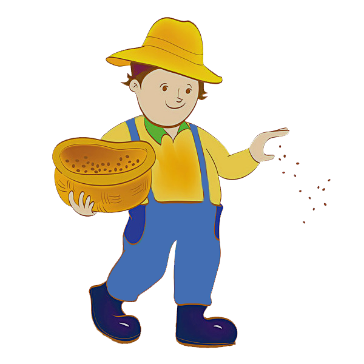

Informationen
Aktuelle Erfahrung: {{level}}
Fehlende Erfahrung: {{exp}}
Geerntet: {{allpoints}}
Arbeitende Bauern: {{farmerscount}}
Saatgut in deiner Tasche: {{seedcount}}
In diesem Job bauen Sie Ernte mit ihren vom Bauernmarkt gekauften Samen an und können die Ernte später zum aktuellen Preis im Bauernmarkt wieder verkaufen.